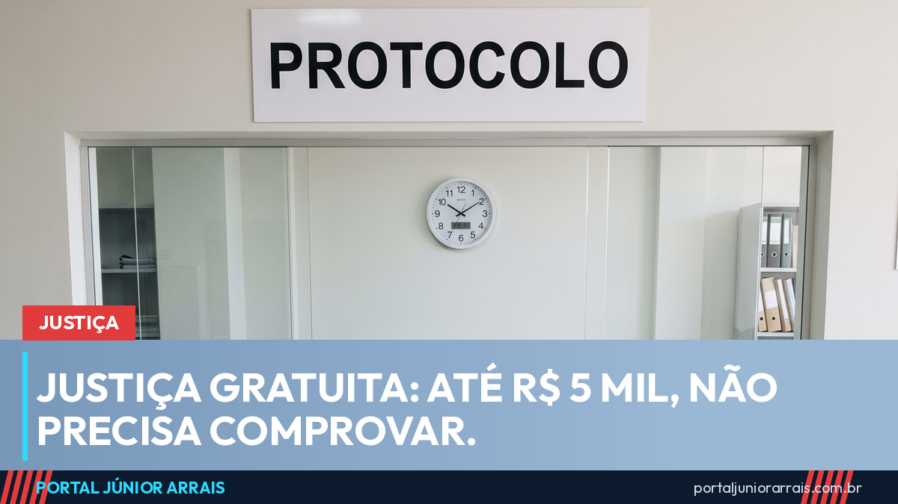
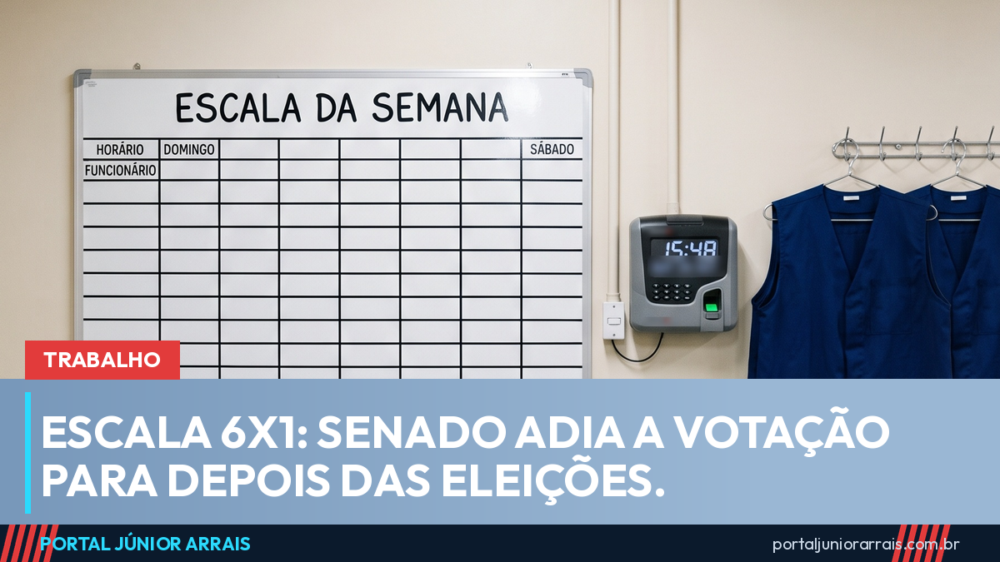
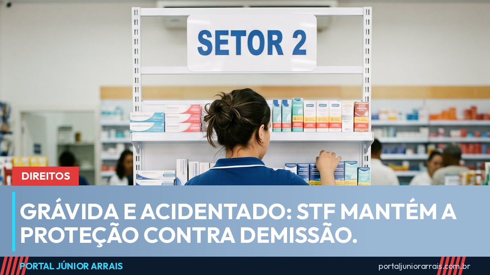
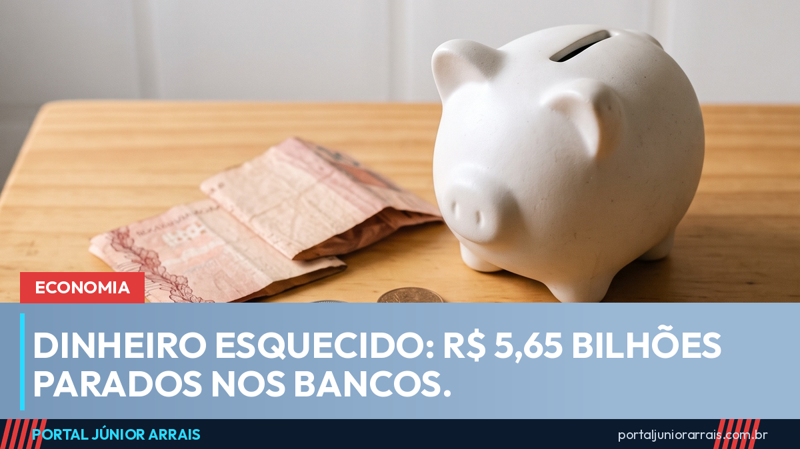
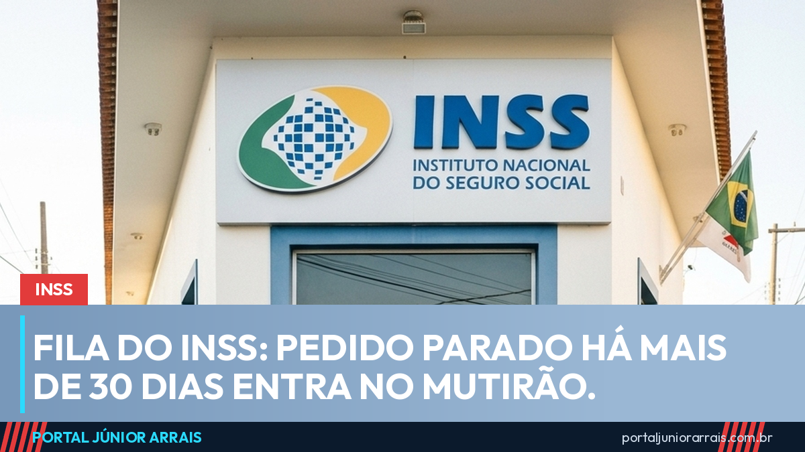
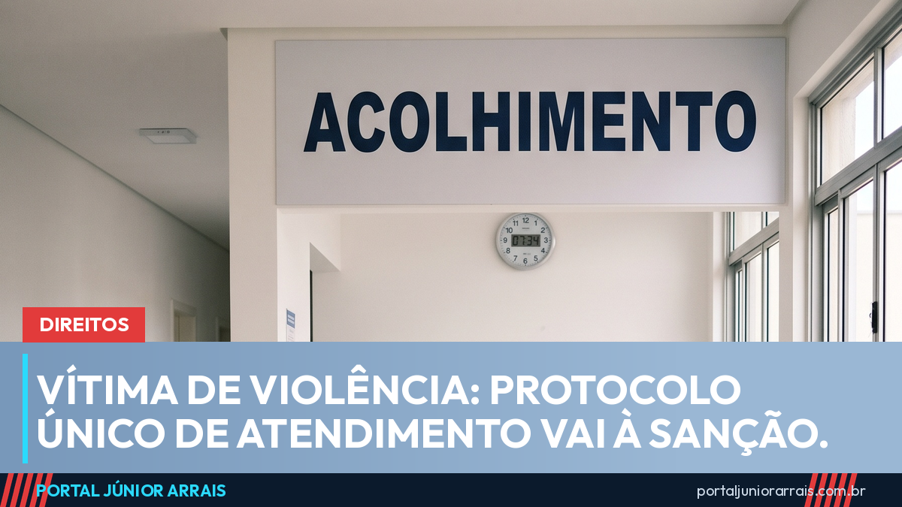
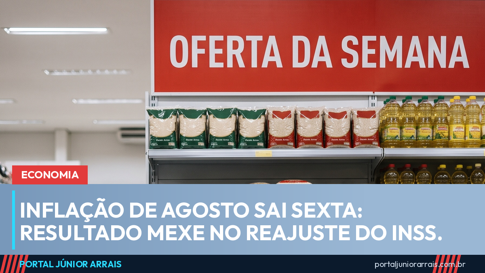
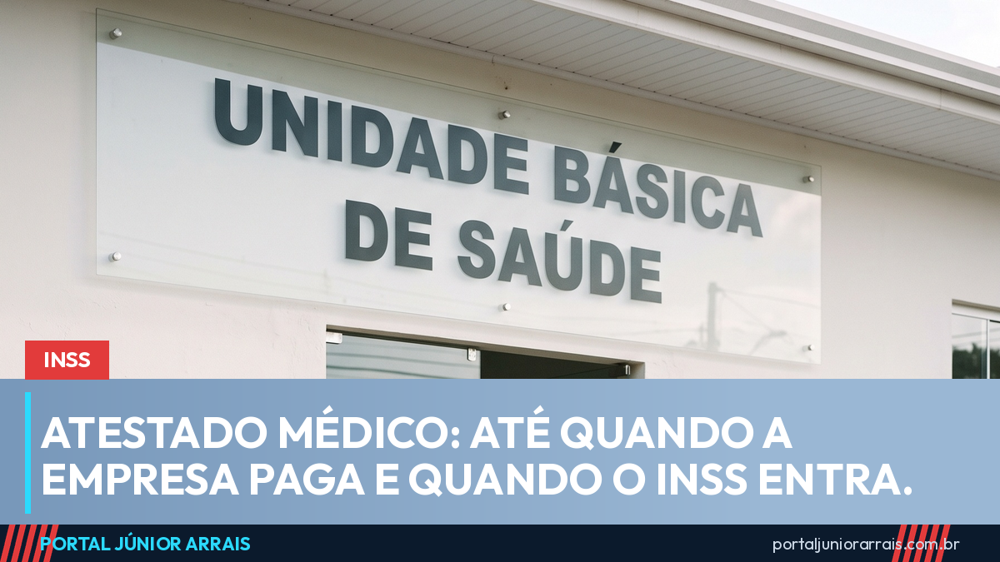

Justiça gratuita: quem ganha até R$ 5 mil não precisa comprovar, decide o STF

Escala 6x1: Senado adia a votação e o fim da escala fica para depois das eleições
Como pagar o INSS sem perder o Bolsa Família em 2026: veja o passo a passo
Inscreva-se no canal →
Grávida e acidentado: STF mantém as regras do TST que protegem contra demissão
Dinheiro esquecido nos bancos chega a R$ 5,65 bilhões; 7 em cada 10 valores são de até R$ 10 Burnout dá auxílio-doença? O que o INSS e a Justiça do Trabalho reconhecem
Burnout dá auxílio-doença? O que o INSS e a Justiça do Trabalho reconhecem

Fila do INSS: lei publicada põe no mutirão pedido parado há mais de 30 dias Assédio no trabalho: Câmara aprova Convenção 190 da OIT, mas ela ainda não vale
Assédio no trabalho: Câmara aprova Convenção 190 da OIT, mas ela ainda não vale

Vítima de estupro: protocolo único de atendimento em hospital e delegacia vai à sançãoYouTube Shorts
Ver todos → Greve na caixa econômica federal: como fica o pagamento do Bolsa Família e do Pé-de-Meia?
Greve na caixa econômica federal: como fica o pagamento do Bolsa Família e do Pé-de-Meia?
 Bolsa Família: aplicativo atualizado para setembro
Bolsa Família: aplicativo atualizado para setembro
 1° lista das cidades com pagamento do Bolsa Família antecipado em setembro de 2026
1° lista das cidades com pagamento do Bolsa Família antecipado em setembro de 2026
 Empréstimo do Bolsa Família na Novo Horizonte
Empréstimo do Bolsa Família na Novo Horizonte
 Posso trabalhar na eleição sem perder o Bolsa Família?
Posso trabalhar na eleição sem perder o Bolsa Família?
Guias do portal
Ver todos os guias →
Bolsa Família
Bolsa Família: quem tem direito, quanto recebe, regra de proteção e o que bloqueia o benefício

BPC/LOAS
BPC/LOAS: quem tem direito, o limite de renda, a avaliação do INSS e o que faz o benefício parar

Benefícios
CadÚnico: o que é, quem pode se inscrever, quando atualizar e quais benefícios dependem dele

Pé-de-Meia
Pé-de-Meia: quem tem direito, quanto o estudante recebe, o que trava a conta e o calendário
Últimas notícias

Economia
Inflação de agosto sai sexta: o que muda para a comida, a luz e o reajuste do INSS

Trabalho
Férias: o que o patrão pode e não pode — 30 dias, terço, parcelamento e venda de 10 dias

INSS
Atestado médico: até quando a empresa paga e quando o INSS entra

Eleições 2026
Eleições 2026: o que pode e o que não pode no dia da votação, em 4 de outubro

Trabalho
Escala 6x1: CCJ do Senado aprovou a PEC, mas ainda faltam dois turnos no Plenário

Economia
Taxa das blusinhas: Congresso aprovou o fim da cobrança e a medida vai à sanção
Vídeos em destaque
Ver todos →Me acompanhe nas redes sociais
Siga o Portal Júnior Arrais para receber notícias e vídeos novos todos os dias.